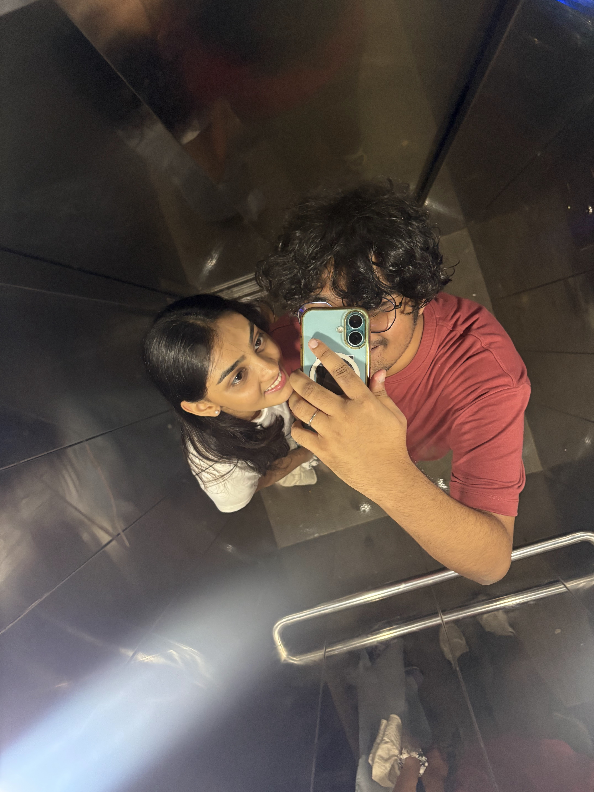
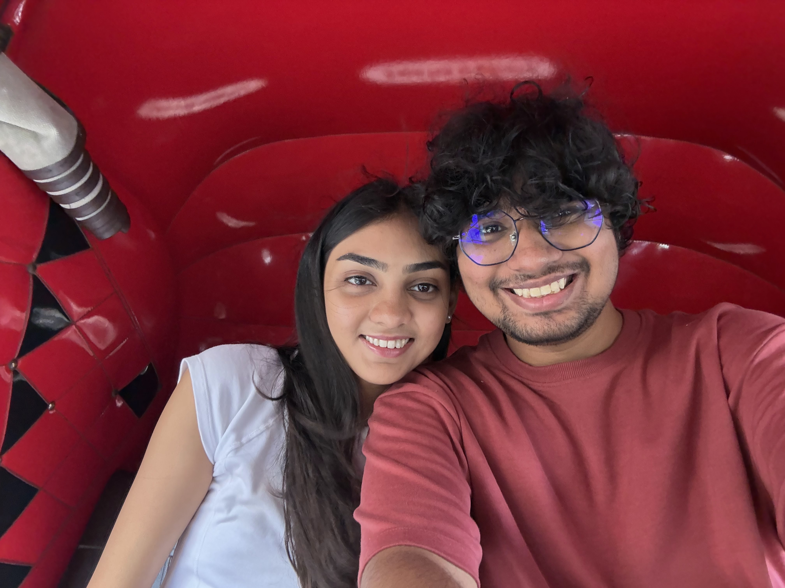
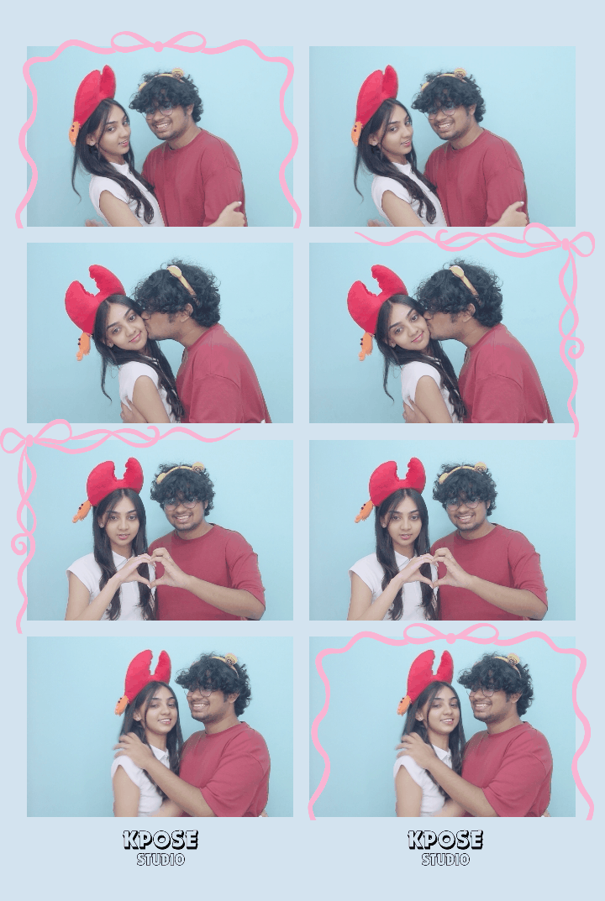
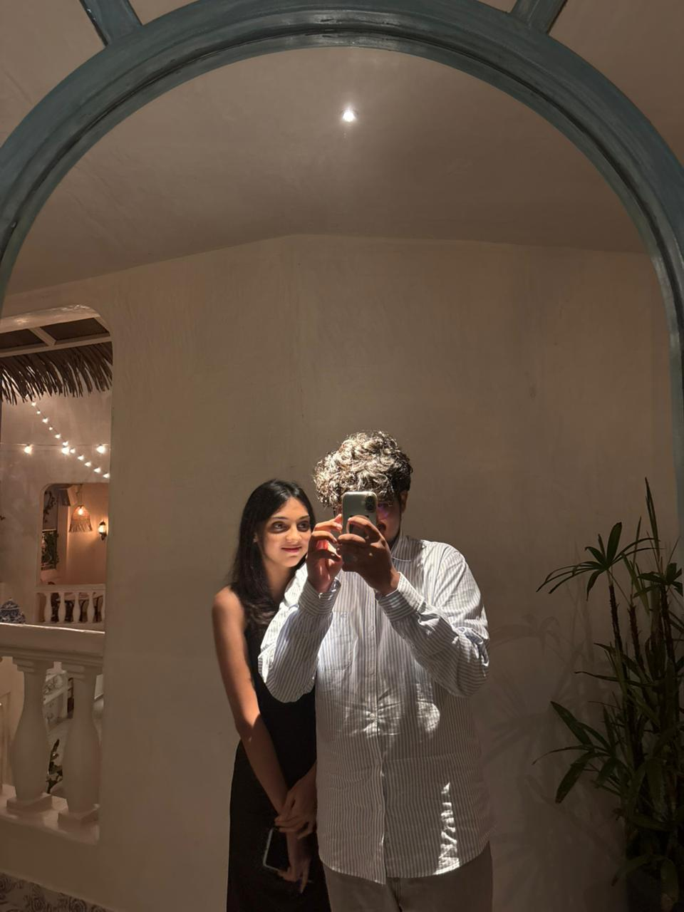
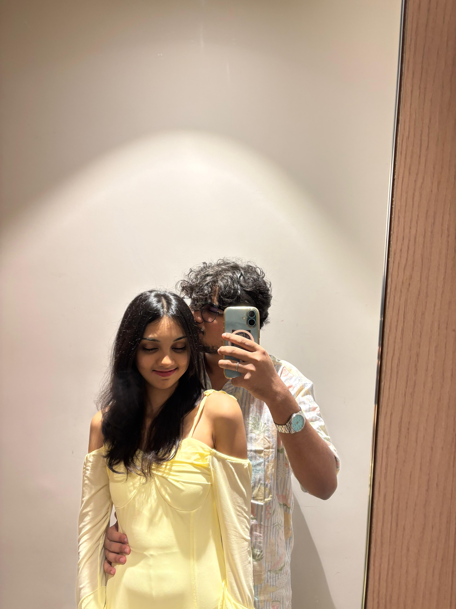
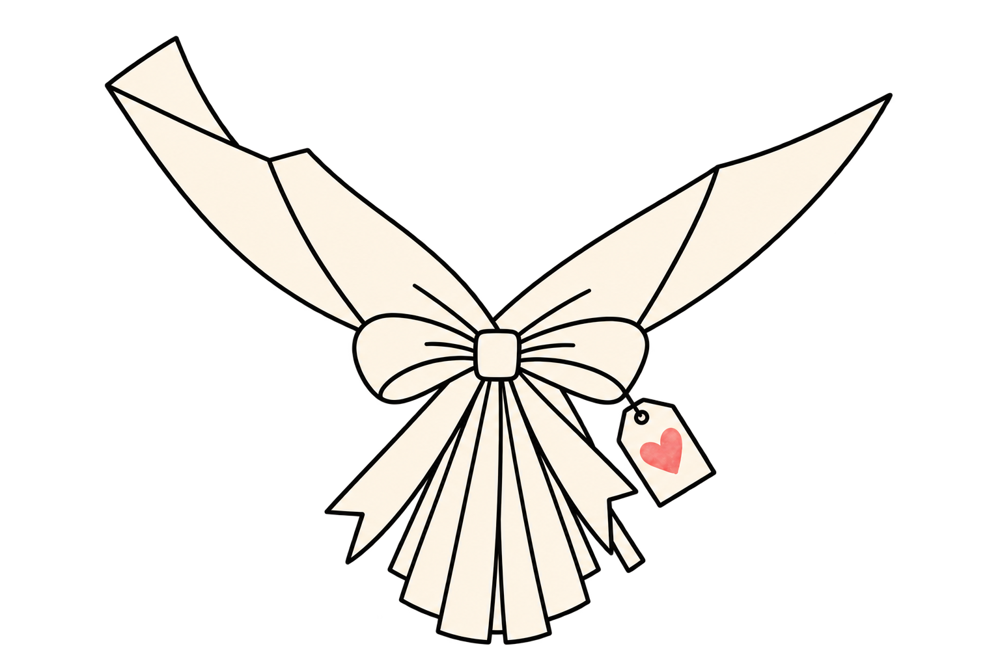

us. two years.






us ♥







hi, divi.
it's been 0 seconds since we chose each other.
in that time, our hearts have beaten 0 times. side by side.
we've been on call for 731 hours.
we've shared ∞ memories. the ones saved on our phones and the ones only we remember.
we've shared ∞ happiness. the loud kind and the quiet kind.
and above all, we've shared a whole life. yours, mine, ours.
time has never felt so wrong. it says two years. but every day with you is a whole lifetime. every day i want to live with you, love you, hold you, protect you, take care of you.
two years ago today, i opened up my heart to you. and thank god i did.
as always, thank you. for putting your faith in me. for loving me. for staying. for always, always listening.
thank you for laughing at the same dumb jokes like they're new. for staying on call at 3am after working the whole day and just hearing you breathe was enough to put me to sleep.
thank you for choosing me. every single day. even the boring ones. even the hard ones. that's the part nobody tells you about love. it isn't a fall. it's a choice. and i'll choose you tomorrow. and the day after. and the one after that.
you have been so strong for me. on the days i couldn't hold myself up, you held me. i don't think you know how much of me is still standing because of you. so much of me. all of me, maybe.
you are my home, divi. not a place. a person. wherever you are, that's where i want to be. always.
i don't have big words to promise you. only small ones. i promise to show up. to try harder. to be softer. to hold your hand through everything that comes next, and everything after that, and everything after that too.
happy two years, my love. here's to the rest of them.
yours, only ever yours ♥
and one small thing i made
i drew one flower for every day. one thought for every flower.

<333
hehe